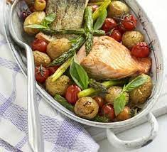

One-pan salmon with roast asparagus

Description
For an easy side dish to complement a spring roast, just cook this recipe without the salmon
Ingredients
- 400g new potato, halved if large
- 2 tbsp olive oil
- 8 asparagus spears, trimmed and halved
- 2 handfuls cherry tomatoes
- 1 tbsp balsamic vinegar
- 2 salmon fillets, about 140g/5oz each
- handful basil leaves
Steps
- Heat oven to 220C/fan 200C/gas 7. Tip the potatoes and 1 tbsp of olive oil into an ovenproof dish, then roast the potatoes for 20 mins until starting to brown. Toss the asparagus in with the potatoes, then return to the oven for 15 mins.
- Throw in the cherry tomatoes and vinegar and nestle the salmon amongst the vegetables. Drizzle with the remaining oil and return to the oven for a final 10-15 mins until the salmon is cooked. Scatter over the basil leaves and serve everything scooped straight from the dish.